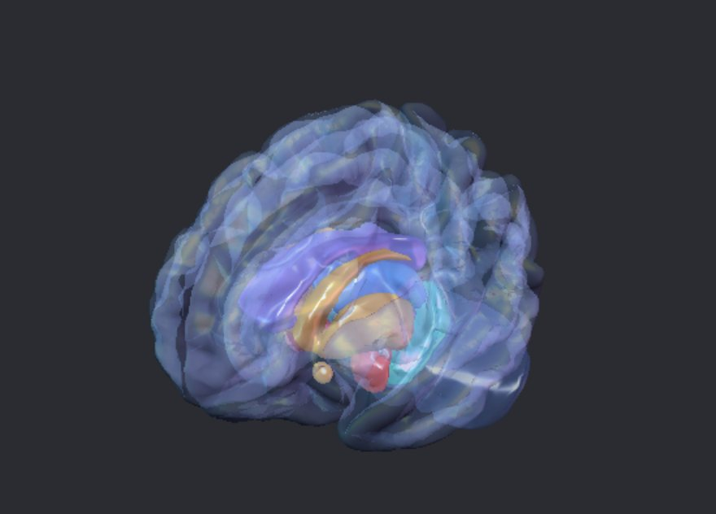

Нейрон и электрический сигналNeurons and electrical signals
Части нейрона, потенциал действия, миелин и передача сигнала.Neuron structure, action potentials, myelin, and signal transmission.
Нейробиология для любознательныхNeuroscience for curious minds
Изучай нейроны, органы чувств, память, сон и движение через понятные объяснения, интерактивный атлас и научные источники.Explore neurons, senses, memory, sleep, and movement through clear explanations, an interactive atlas, and research resources.

Открыть полный атлас ↗Open full atlas ↗Начинай с основ или переходи сразу к интересующей теме. В каждом разделе связываются структура, функция и доказательства.Start with the basics or jump to a topic. Each section connects anatomy, function, and evidence.
Части нейрона, потенциал действия, миелин и передача сигнала.Neuron structure, action potentials, myelin, and signal transmission.
Как клетки обмениваются сигналами и меняют силу связей.How cells communicate and adjust the strength of connections.
Кора, подкорковые структуры и проводящие пути — без упрощения мозга до «одной зоны на одну функцию».Cortex, subcortical structures, and pathways — without reducing the brain to one area per function.
Как зрительные, слуховые и телесные сигналы проходят от рецепторов к мозгу.How visual, auditory, and body signals travel from receptors to the brain.
Кодирование, консолидация, извлечение и перестройка нейронных сетей.Encoding, consolidation, retrieval, and changes in neural networks.
Как мозг организует циклы сна и бодрствования, координацию и точность действий.How the brain organizes sleep–wake cycles, coordination, and precise action.
Материалы помогают повторять основы, связанные с ЕГЭ по биологии, а также GCSE/IGCSE, IB и AP по биологии. Это независимый учебный ресурс, не официальный банк заданий; сверяй подготовку с актуальной программой и рекомендациями преподавателя.These materials support revision of concepts relevant to ЕГЭ Biology and GCSE/IGCSE, IB, and AP Biology. This is an independent learning resource, not an official question bank; check your revision against the current syllabus and teacher guidance.
Эти темы расширят курс до целостной биологии человека и дадут полезные связи с экзаменационными программами.These topics expand the course into human biology and connect it with school exam syllabuses.
Рефлекторные дуги, сенсорные и двигательные пути.Reflex arcs, sensory pathways, and motor pathways.
Зрение, слух, равновесие, осязание и работа рецепторов.Vision, hearing, balance, touch, and receptor function.
Эндокринная регуляция и поддержание постоянства внутренней среды.Endocrine regulation and maintenance of the internal environment.
Нервно-мышечное соединение, сокращение и обратная связь.Neuromuscular junctions, contraction, and feedback.
Наследование, развитие и сравнительная биология.Inheritance, development, and comparative biology.
ЭЭГ, МРТ, фМРТ, экспериментальный дизайн и критическая оценка доказательств.EEG, MRI, fMRI, experimental design, and critical appraisal of evidence.
Поворачивай модель, выбирай структуры и смотри, как области объединяются в пути и функциональные системы: 28 структур, 13 процессов в анимации и 9 нейромедиаторов.Rotate the model, pick structures and see how regions combine into pathways and functional systems: 28 structures, 13 animated processes and 9 neurotransmitters.
Выбери область по названию или коснись её на модели.Choose a region by name or select it on the model.
Прочитай краткое описание функции и соседних структур.Read a concise summary of its role and connected structures.
Проследи путь сигнала и соотнеси его с изучаемой темой.Trace a signal pathway and connect it to the topic.
Закрепи знания вопросами и повторением терминов.Review with short questions and key terms.
Ищи темы, записывай заметки и проходи короткие тесты с объяснениями.Search topics, take notes, and try short quizzes with explanations.
Открытые атласы, образовательные материалы, статьи и видеолекции из списка команды проекта.Open atlases, learning materials, papers, and lectures from the project team's resource list.
Статьи и внешние видео открываются на сайтах издателей и авторов; их содержание и возрастная уместность могут различаться. Для уровня GCSE/IGCSE, IB и AP используйте эти материалы как дополнение к школьной программе и обсуждайте сложные публикации с преподавателем.Articles and videos open on publisher and creator websites; their content and age suitability may vary. For GCSE/IGCSE, IB, and AP, use them as supplements to your course and discuss advanced papers with a teacher.